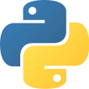

Apropos de Moi
Let me tell you a few things...
Bio
Tech Manager | Développeuse WEB | Ingénieur Chimiste
Curieuse | Motivée | Force de proposition | Apprenante | Odacieuse
Hind ER-RAYSY est, à la base, une ingénieur chimiste ayant plusieurs compétences diverses en chimie, qualité, gestion de projet ainsi que le développement numérique.
Le développement numérique me tenait à cœur depuis très longtemps, et comme j’ai toujours envie d’apprendre, j’ai donc décidé de me lancer dans cette aventure et de m’y former afin d’acquérir les compétences nécessaires à exercer le métier d’un chef de projet dans le secteur numérique.
J’ai eu à gérer plusieurs projets individuellement mais aussi en équipe, en mode agile, où j'ai acquis plusieurs compétences dans le dévloppement numérique ainqi que la gestion de projet.
Aujourd’hui J’ai vraiment à cœur d’accompagner les entreprises dans leur transformation digitale, et je m’engage à faire mon mieux et me dépasser pour mener à bien toutes les missions qui me seront confiées.
Education
- Master en Chimie Analytique, MAROC, 2015
- Master en Chimie Organique, METZ, 2018
- DU Tech Manager Conception et Management de Projet Numérique, (Matrice en Partenariat avec l'UVSQ) PARIS, 2021
Mes Compétences en développement
-



Expériences Pro
- Ingénieur Qualité Opérationelle, MAROC, 2019 (Stage de 6 mois)
- Ingénieur Assurance Qualité, SISTERON, 2018 (Stage de 6 mois)
- Alternante(Rythme 3*3), METZ, 2017-2018 (3 mois)
- Ingénieur Développement Analytique, MAROC, 2017 (CDD de 6 mois)
- Ingénieur Controle Qualité, MAROC, 2015-2016 (CDD de 18 mois)
- Analyste Physico-chimique, MAROC, 2013 (2 mois)